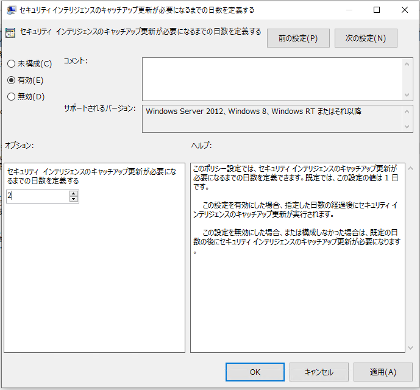
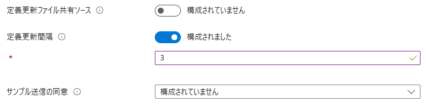

こんにちは Azure Security サポートチームです。
この記事では Microsoft Defender ウイルス対策(MDAV) のセキュリティインテリジェンスの更新管理についておまとめします。
MDAV のセキュリティインテリジェンスの概要や手動更新手順については以下の記事にておまとめしておりますので、参考情報としてご利用ください。
※ 本記事の内容は 2023 年 9 月 5 日時点で最新の Windows 10 22H2 環境で動作確認を実施しています。
本記事の内容
- セキュリティインテリジェンスの更新を管理するための事前情報
- グループポリシーを使用してセキュリティインテリジェンスの自動更新を設定する
- Intune を使用してセキュリティインテリジェンスの自動更新を設定する
- ローカルネットワークファイル共有を更新ソースとして設定する
- セキュリティインテリジェンスの更新に関するよくある質問
- セキュリティインテリジェンス更新に伴うダウンロードサイズの目安を教えてください
- セキュリティインテリジェンスの更新に成功したかどうかを確認する方法を教えてください
- セキュリティインテリジェンスの更新が指定の時刻に行われないのはなぜですか
- 指定した時刻に更新が行われることを確認する方法を教えてください
- プロキシを使用してセキュリティインテリジェンスの更新を行うことは可能ですか
- セキュリティインテリジェンスの更新によってインターネット回線がひっ迫する可能性はありますか
- 更新プログラムの取得元を WSUS に変更している場合にセキュリティインテリジェンスの更新に失敗するのはなぜですか
- 更新プログラムの取得元を WSUS に設定した環境で、セキュリティインテリジェンスのみ Microsoft Update で取得することは可能ですか
- まとめ
セキュリティインテリジェンスの更新を管理するための事前情報
以下に、セキュリティインテリジェンスの更新を管理するために事前に把握しておくとよい情報についておまとめいたします。
セキュリティインテリジェンスの更新頻度について
Microsoft Defender ウイルス対策が最新の脅威に対応するため、セキュリティインテリジェンスの更新は 1 日に複数回配信されます。
そして、弊社では、セキュリティ上の観点から可能な限り最新のセキュリティインテリジェンスの適用を推奨しております。
そのため、セキュリティインテリジェンスの自動更新をスケジュールする際には、最低でも 1 日に 1 度、可能であれば複数回の更新確認を実施いただくことを推奨します。
セキュリティインテリジェンスの更新ソースについて
Microsoft Defender ウイルス対策は、セキュリティインテリジェンスの更新プログラムを取得するために複数の更新ソースを指定することが可能です。
ユーザは、Microsoft Defender ウイルス対策のセキュリティインテリジェンスの更新のためにとして、以下のいずれかを使用することが可能です。
- Microsoft Update
- Windows Server Update Service(WSUS)
- Microsoft Endpoint Configuration Manager
- ネットワークファイル共有
- Microsoft Defende ウイルス対策およびその他の Microsoft マルウェア対策のセキュリティ インテリジェンス更新プログラム(MMPC)
Microsoft Defender ウイルス対策が指定可能な更新ソースの詳細については以下の公開情報にてご案内しています。
参考情報：Microsoft Defender ウイルス対策が更新プログラムを受け取る方法と場所を管理する | Microsoft Learn
セキュリティインテリジェンスの更新ソースを決定するしくみ
Microsoft Defender ウイルス対策がセキュリティインテリジェンスの更新を行う場合、使用する更新元は既定では「フォールバック順序」の定義に従います。
例えば、最新の Windows 10 デバイスではフォールバック順序が既定で MicrosoftUpdateServer|MMPC に設定されています。
この場合、Microsoft Defender ウイルス対策はセキュリティインテリジェンスの更新を行う際に、まず Microsoft Update を使用して更新を行います。
何らかの理由で Microsoft Update サービスを利用できなかった場合には、代替更新元として 2 番目に設定されている MMPC を使用した更新を試みます。
「フォールバック順序」の詳細については以下の公開情報の記載を参照ください。
参考情報：フォールバック順序 | Microsoft Learn
セキュリティインテリジェンス自動更新のトリガーに設定可能な項目
Microsoft Defender ウイルス対策 のセキュリティインテリジェンス更新は、複数の機能や設定によってトリガーされます。
このような仕組みによって、最新の脅威に対応するためのセキュリティインテリジェンスを定期的に端末に適用することができます。
一般にセキュリティインテリジェンスの更新に利用される機能や設定については以下の通りです。
- Microsoft Update による更新
- Microsoft Defender ウイルス対策によってスケジュールされた更新
- キャッチアップ更新プログラムの取得
- 特定のイベントをトリガーとする更新
- Configration Manager を使用した更新
各項目の詳細については、上記のリンク先の公開情報を参照してください。
セキュリティインテリジェンスの手動更新方法について
セキュリティインテリジェンスを手動で更新、ロールバックする方法については以下の公開ブログにておまとめしております。
グループポリシーを使用してセキュリティインテリジェンスの自動更新を設定する
Windows マシンでスケジュールスキャンを構成する場合、GPOもしくはローカルグループポリシーにて、**[管理用テンプレート]>[Windows コンポーネント]>[Microsoft Defender ウイルス対策]>[セキュリティインテリジェンスの更新]** 下の設定を変更します。
※ ご利用環境によっては、グループポリシーエディタ上のポリシー名が [Microsoft Defender ウイルス対策] ではなく[Windows Defender ウイルス対策] もしくは [Endpoint Protection] と表示されている場合があります。
セキュリティインテリジェンスの定期更新をスケジュールする場合、ユーザは以下の 3 つの設定を利用できます。
セキュリティインテリジェンスの更新ソースを設定する の設定は前述のフォールバック順序の設定に該当しており、Microsoft Defender ウイルス対策によってトリガーされるすべての更新に影響します。
上記の 3 つの設定は、同時に構成することも可能です。
また、キャッチアップ更新やイベントベースなど、特定の条件でセキュリティインテリジェンスを更新する ことも可能です。
参考情報：ウイルス対策の更新プログラムMicrosoft Defenderスケジュールする | Microsoft Learn
セキュリティインテリジェンスの更新ソースを設定する
Microsoft Defender ウイルス対策がセキュリティインテリジェンスの更新を行う場合の更新ソースは、前述の通り「フォールバック順序」の定義によって決定されます。
既定値では、フォールバック順序は「Microsoft Update -> MMPC(MicrosoftUpdateServer|MMPC)」に設定されています。
そのため、インターネットに接続可能なマシンで、セキュリティインテリジェンスの更新にも Microsoft Update サービスや MMPC を利用する場合には、フォールバック順序の設定変更は不要です。
一方で、WSUS を主な更新元に利用する場合には、グループポリシーにて、 [セキュリティインテリジェンスの更新をダウンロードするための更新元の順序を定義する] を有効化し、フォールバック順序に InternalDefinitionUpdateServer を加える必要があります。
以下の画面キャプチャは、セキュリティインテリジェンスの主要な更新元を WSUS、代替更新元を MMPC に指定する場合の設定例です。
セキュリティインテリジェンスの更新時刻と曜日を指定する
ユーザは、Microsoft Defender ウイルス対策がセキュリティインテリジェンスの更新を試行する曜日と時刻を指定することができます。
セキュリティインテリジェンスの更新スケジュールは、[管理用テンプレート]>[Windows コンポーネント]>[Microsoft Defender ウイルス対策]>[セキュリティインテリジェンスの更新] のうち、以下の 2 つのポリシーを使用して設定します。
- [セキュリティインテリジェンスの更新を確認する曜日を指定する] (SignatureScheduleDay)
- [セキュリティインテリジェンスの更新を確認する時刻を指定する] (SignatureScheduleTime)
具体的には、SignatureScheduleDay で指定した曜日の、SignatureScheduleTime で指定した時刻にセキュリティインテリジェンスの更新が試行されます。
SignatureScheduleDay には既定で 0x8(実行しない) が設定されているため、SignatureScheduleTime によるセキュリティインテリジェンス更新のスケジュールを行う場合、まず SignatureScheduleDay の設定を変更する必要があります。
例えば、毎日のセキュリティインテリジェンスの更新時刻を指定する場合は、以下のように [セキュリティインテリジェンスの更新を確認する曜日を指定する] を [有効] に変更し、設定値を [毎日] とします。
なお、 [セキュリティインテリジェンスの更新を確認する曜日を指定する] の設定を [毎日] にして保存した場合、グループポリシーエディタ上では以下のように [セキュリティインテリジェンスの更新を確認する曜日を指定する] の状態が [無効] と表示される場合があります。
しかし、上記の表示となる場合でも、SignatureScheduleDay の値が 0 に設定されている場合、セキュリティインテリジェンスの更新は、SignatureScheduleTime で指定の時刻に [毎日] 実施されます。
設定が適切に反映されているかについては、後述するように PowerShell で Get-MpPreference | Select-Object SignatureScheduleDay を実行することで確認が可能です。
[セキュリティインテリジェンスの更新を確認する曜日を指定する] (SignatureScheduleDay) の設定が完了したら、続いて [セキュリティインテリジェンスの更新を確認する時刻を指定する] (SignatureScheduleTime) の設定を行います。
SignatureScheduleTime は、午前 0 時からの分数で更新をトリガーする時刻を指定します。
例えば、以下のように 120 を指定した場合、セキュリティインテリジェンスの更新は午前 2 時にトリガーされます。
上記の 2 つの設定を実施後、設定が反映されていることを確認するためには、PowerShell で以下のコマンドレットを実行します。
1 | Get-MpPreference | Select-Object SignatureScheduleDay,SignatureScheduleTime |
上記コマンドの実行結果が以下となる場合、セキュリティインテリジェンスの更新は「毎日、午前 2 時」に試行されると判断することができます。
1 | SignatureScheduleDay SignatureScheduleTime |
セキュリティインテリジェンスの更新間隔を指定する
ユーザは、Microsoft Defender ウイルス対策がセキュリティインテリジェンスの更新を試行する間隔を指定することができます。
セキュリティインテリジェンスの更新間隔は、[管理用テンプレート]>[Windows コンポーネント]>[Microsoft Defender ウイルス対策]>[セキュリティインテリジェンスの更新] のうち、以下のポリシーを使用して設定します。
この設定によってセキュリティインテリジェンスの更新を試行する間隔は時間単位で指定することができます。
以下の設定画面では、セキュリティインテリジェンスの更新間隔を 3 時間ごとに指定しています。
- [セキュリティインテリジェンスの更新をチェックする間隔を指定する] (SignatureUpdateInterval)
Microsoft Defender ウイルス対策は、最後にセキュリティインテリジェンスを更新してから指定された時間が経過した場合、新たな更新をチェックします。
例えば、SignatureUpdateInterval を 3 時間に指定した場合には、セキュリティインテリジェンスの最終更新時刻(AntivirusSignatureLastUpdated) から 3 時間ごとのタイミングでセキュリティインテリジェンスの更新確認が行われます。
なお、この設定は、セキュリティインテリジェンスの更新時刻と曜日を指定する の設定とは独立して動作します。
そのため、SignatureScheduleDay が既定値の 0x8(実行しない) に設定されている場合でも、SignatureUpdateInterval によるセキュリティインテリジェンスの自動更新は実施されます。
特定の条件でセキュリティインテリジェンスを更新する
Microsoft Defender ウイルス対策では、スケジュールされた更新とは別に、特定の条件やイベントベースでセキュリティインテリジェンスの更新をトリガーすることができます。
よく利用される設定項目について以下で紹介します。
- [スタートアップ時に最新のウイルスおよびスパイウェア対策セキュリティインテリジェンスをチェックする]
この設定を有効化すると、Microsoft Defender ウイルス対策のスタートアップ時に新しいセキュリティインテリジェンスの更新が試行されます。
参考情報：起動時に保護の更新プログラムを確認する | Microsoft Learn
- [ウイルス対策セキュリティインテリジェンスが最新でないと見なされるまでの日数を定義する]
この設定を有効化すると、端末で一定期間セキュリティインテリジェンスの更新が行われていない場合、次回のサインイン時に自動的にセキュリティインテリジェンスの更新がトリガーされます。
既定では、1 日以上セキュリティインテリジェンスの更新が行われていない場合、この設定によってキャッチアップ更新が実施されます。

参考情報：グループ ポリシーを使用してキャッチアップ更新機能を有効にして構成する | Microsoft Learn
Intune を使用してセキュリティインテリジェンスの自動更新を設定する
Intune からセキュリティインテリジェンスの自動更新を設定する場合、**[エンドポイントセキュリティ]>[ウイルス対策] から作成可能な [Microsoft Defender ウイルス対策] ポリシー**や、構成プロファイルから作成可能な [管理用テンプレート] ポリシーを使用することが可能です。
[管理用テンプレート] ポリシーを利用する場合は、グループポリシーを使用してセキュリティインテリジェンスの自動更新を構成する方法に関する手順を参照し、対応するポリシーを構成します。
[Microsoft Defender ウイルス対策] ポリシーを使用する場合は、以下の項目を参照してください。
※ [Microsoft Defender ウイルス対策] ポリシーを構成する場合、プラットフォームは [Windows 10、Windows 11、Windows Server] を選択します。
参考情報：Microsoft Intuneでエンドポイント セキュリティ ポリシーを使用してウイルス対策設定を管理する | Microsoft Learn
Intune でセキュリティインテリジェンスの更新ソースを設定する
Intune の [Microsoft Defender ウイルス対策] ポリシーでセキュリティインテリジェンスの更新ソースを設定する場合、[定義更新のフォールバック順序] のトグルボタンを有効化した上で、設定したい更新ソースをパイプ区切りで入力します。
既定値では、フォールバック順序は「Microsoft Update -> MMPC(MicrosoftUpdateServer|MMPC)」に設定されています。
そのため、インターネットに接続可能なマシンで、セキュリティインテリジェンスの更新にも Microsoft Update サービスや MMPC を利用する場合には、フォールバック順序の設定変更は不要です。
一方で、WSUS を主な更新元に利用する場合には、フォールバック順序に InternalDefinitionUpdateServer を加える必要があります。
以下の画面キャプチャは、セキュリティインテリジェンスの主要な更新元を WSUS、代替更新元を MMPC に指定する場合の設定例です。
参考情報：SignatureUpdateFallbackOrder | Microsoft Learn
Intune でセキュリティインテリジェンスの更新間隔を指定する
Intune のウイルス対策ポリシーを使用する場合、セキュリティインテリジェンスの更新間隔を指定する と同じく、SignatureUpdateInterval の設定を変更して Microsoft Defender ウイルス対策は 3 時間ごとにセキュリティインテリジェンスの更新を試行するように構成することができます。

参考情報：Defender Policy CSP - Windows Client Management | Microsoft Learn
ローカルネットワークファイル共有を更新ソースとして設定する
この項では、セキュリティ インテリジェンスとプラットフォーム更新プログラム用の UNC 共有を作成する の記載に従ってローカルネットワークファイル共有をセキュリティインテリジェンスの更新元に設定する方法を紹介します。
具体的には、以下の図のように、インターネットからサーバが配布用のセキュリティインテリジェンスの更新プログラムを取得し(①)、各クライアント端末はそのサーバからネットワークファイル共有を通して更新プログラムを取得(②)します。
サーバで更新プログラムを取得し、ネットワークファイル共有を行う
※ 本記事では、セキュリティインテリジェンス更新プログラムの配布サーバとして Windows Server 2019 を使用します。
- ファイル共有を行うサーバにて管理者権限でコマンドプロンプトを起動し、以下のコマンドでスクリプトと更新プログラムを配置するフォルダを作成します。
1 | MD C:\Tool\PS-Scripts\ |
- SignatureDownloadCustomTask 1.4 の配布サイトにアクセスして [Manual Download] のタブを開き、[Download the raw nupkg file] ボタンをクリックして
signaturedownloadcustomtask.1.4.0.nupkgをダウンロードします。 - 任意の解凍ツールを使用して
signaturedownloadcustomtask.1.4.0.nupkgを展開し、取得したSignatureDownloadCustomTask.ps1を作成したスクリプト用フォルダ(C:\Tool\PS-Scripts\) に配置します。 - 続いて、管理者権限で起動した PowerShell で以下のコマンドを順に実行し、更新プログラムを定期的に取得するスケジュールタスクを作成します。
1 |
|
- スケジュールタスクの登録に成功した場合、タスクスケジューラライブラリの [Microsoft]>[Windows]>[Microsoft Defender(もしくは Windows Defender)] に以下のようなスケジュールタスクが登録されます。
- 作成された 4 つのスケジュールタスクを右クリックし、[プロパティ] 画面から [操作] タブを開いて [編集] ボタンをクリックします。
そして、[引数の追加(オプション)] 欄にて-Noprofile -ExecutionPolicy AllSigned (省略)の定義を、-Noprofile -ExecutionPolicy RemoteSigned (省略)に変更します。
- このスクリプトをシステムで初めて実行する場合は、管理者権限で起動したコマンドプロンプトで以下のコマンドを実行します。
1 | C:\windows\system32\windowspowershell\v1.0\powershell.exe -NoProfile -executionpolicy RemoteSigned -command "&\"C:\Tool\PS-Scripts\SignatureDownloadCustomTask.ps1\" -action run -arch x64 -isDelta $False -destDir C:\Temp\TempSigs\x64" |
注意：2023 年 9 月 5 日現在、Windows Server 2016 以下のバージョンを使用している環境で「"2" 個の引数を指定して "DownloadFile" を呼び出し中に例外が発生しました: "要求は中止されました: SSL/TLS のセキュリティで保護されているチャネルを作成できませんでした"」というエラーで更新プログラムのダウンロードに失敗する問題が確認されております。問題の解決のためには、PowerShell で TLS1.2 を利用できるように構成する必要があります。詳細については 公開情報 を参照するか、弊社までお問い合わせください。
- [7.] の手順の完了後、
C:\Temp\TempSigs\x64に更新用のプログラムが配置されていることを確認します。 - 最後に、[5.] で確認したスケジュールタスクを右クリックして手動実行し、
C:\Temp\TempSigs以下のフォルダに更新プログラムが配置されることを確認します。 - 更新プログラムを配置しているフォルダ
C:\Temp\TempSigsを共有フォルダとして構成します。その際、対象フォルダへの匿名アクセスを許可する必要がある点に注意してください。
クライアント端末でローカルネットワーク共有からセキュリティインテリジェンスを更新する
- 事前に、エクスプローラーなどでセキュリティインテリジェンスの配布を行う共有フォルダにクライアント端末から UNC パスでアクセス可能であることを確認しておきます。
- セキュリティインテリジェンスの更新ソースを設定する と同じ手順で、フォールバック順序に FileShares を指定します。
- 続いて、[セキュリティインテリジェンスの更新をダウンロードするためのファイル共有を定義する] (SignatureDefinitionUpdateFileSharesSources) に作成した共有フォルダの UNC パスを指定します。
- 以上の設定を実施後、セキュリティインテリジェンスの更新に成功することを確認します。
セキュリティインテリジェンスの更新に関するよくある質問
セキュリティインテリジェンス更新に伴うダウンロードサイズの目安を教えてください
定期的に更新が行われている端末では、セキュリティインテリジェンスの更新に伴うダウンロードサイズを最小限にするため、現在適用されているバージョンと最新のセキュリティインテリジェンスの差分(デルタ)のみをダウンロードします。
そのため、実際のダウンロードサイズは端末のセキュリティインテリジェンスの更新頻度や更新元などによって変動する可能性があります。
また、ご利用環境や更新のタイミングによっては、通常より多くの更新を取得したり、セキュリティインテリジェンスの差分(デルタ)ではなく、完全な更新プログラムの取得を行う場合があります。
以上の理由から、セキュリティインテリジェンスの更新に伴う具体的なダウンロードサイズの目安についてはご案内が困難であり、ユーザの環境で実際に確認いただくようお願いいたしております。
※ なお、セキュリティインテリジェンスの更新に伴うダウンロードサイズは、環境によっては最大で 110 ~ 130 MB 程度になる可能性があります。
参考情報：Microsoft Defender ウイルス対策が更新プログラムを受け取る方法と場所を管理する | Microsoft Learn
セキュリティインテリジェンスの更新に成功したかどうかを確認する方法を教えてください
セキュリティインテリジェンスの更新に成功した場合、Microsoft Defender ウイルス対策のイベントログ([アプリケーションとサービスログ]>[Microsoft]>[Windows]>[Windows Defender]>[Operational]) にイベント ID：2000 のイベントが記録されます。
参考情報：Microsoft Defender ウイルス対策イベントの ID とエラー コード | Microsoft Learn
PowerShell を使用して、システムで最後にセキュリティインテリジェンスの更新に成功したイベントログを抽出するには以下のコマンドを使用できます。
1 | Get-WinEvent -LogName "Microsoft-Windows-Windows Defender/Operational" -FilterXPath "*[System[(EventID=2000)]]" -MaxEvents 1 |
また、PowerShell で以下のコマンドレットを使用することで、現在端末に適用されているセキュリティインテリジェンスのバージョンを確認することでも、セキュリティインテリジェンスの更新に成功していることを確認することが可能です。
1 | Get-MpComputerStatus | Select-Object AntivirusSignatureVersion |
セキュリティインテリジェンスの更新が指定の時刻に行われないのはなぜですか
スケジュールされたセキュリティインテリジェンスの更新は、端末側のシステム時間に従って開始されます。
そのため、例えばシステムの時刻設定が UTC や JST(UTC+9) である端末にてそれぞれ同一のスケジュール設定を行った場合には、セキュリティインテリジェンスの更新の開始時刻に差異が発生する点に留意してください。
また、セキュリティインテリジェンス自動更新のトリガーに設定可能な項目 に記載の通り、セキュリティインテリジェンスの更新は複数のサービスや設定によって実施されるため、一般的な環境では 1 日に複数回セキュリティインテリジェンスの更新確認が行われる場合があります。
そして、Microsoft Defender ウイルス対策がセキュリティインテリジェンスの更新を試行した際、すでに端末に最新のセキュリティインテリジェンスが適用されている場合、更新はスキップされます。
そのため、ユーザの端末で最新のセキュリティインテリジェンスが定期的に更新されている場合には、必ずしも指定の時刻に更新が実施される必要はないものとご認識ください。
なお、もし何らかの理由で セキュリティインテリジェンスの更新時刻と曜日を指定する で設定した時刻にセキュリティインテリジェンスの更新が行われることを確認する必要がある場合は、指定した時刻に更新が行われることを確認する方法を教えてください 手順をお試しください。
指定した時刻に更新が行われることを確認する方法を教えてください
※ 事前に セキュリティインテリジェンスの更新が指定の時刻に行われないのはなぜですか を参照ください。
Windows マシンでは、既定で以下の設定が有効化されているため、スケジュールした時刻ちょうどに更新が行われることを確認するためには、この設定を無効化する必要があります。
- スケジュールされたタスクの実行時間をランダム化する
※ なお、スケジュールされたタスクの実行時間をランダム化することは、帯域負荷の軽減などのパフォーマンスの上のメリットがあるため、特別な理由がない限り無効化いただく必要はありません。
上記の設定はグループポリシーまたは Intune の構成プロファイルなどから設定変更が可能です。
グループポリシーを使用する場合は、[管理用テンプレート]>[Windows コンポーネント]>[Microsoft Defender ウイルス対策] 下の [スケジュールされたタスクの時間をランダム化する] の設定を [無効] に変更します。
検証のために特定の端末のみで設定を変更する場合、PowerShell コマンドレットによる設定変更も可能です。
スケジュールされたタスクの実行時間をランダム化を無効化する場合は、管理者権限で起動した PowerShell で以下のコマンドレットを実行します。
1 | Set-MpPreference -RandomizeScheduleTaskTimes $False |
設定を再有効化する場合は以下のコマンドレットを実行します。
1 | Set-MpPreference -RandomizeScheduleTaskTimes $True |
テストを行う端末でスケジュールされたタスクの実行時間をランダム化する設定を無効化したら、以下の手順でセキュリティインテリジェンスの更新が指定の時刻に行われることを確認します。
- セキュリティインテリジェンスの更新時刻と曜日を指定する の項に記載の以下のコマンドレットを PowerShell で実行し、セキュリティインテリジェンスの更新スケジュールが意図した時刻に設定されていることを確認します。
1 | Get-MpPreference | Select-Object SignatureScheduleDay,SignatureScheduleTime |
- 続いて、SignatureScheduleTime で指定した時刻の直前に端末にサインインし、以下のコマンドレットにて現在端末に適用されているセキュリティインテリジェンスのバージョンが最新バージョンではないことを確認します。
1 | Get-MpComputerStatus | Select-Object AntivirusSignatureVersion |
※ 現在公開されている最新のセキュリティインテリジェンスのバージョンは Latest security intelligence update から確認できます。
※ 指定の時刻の前に更新が実行され、すでに最新のセキュリティインテリジェンスが適用されている場合、セキュリティインテリジェンスの更新はスキップされるため、SignatureScheduleTime で指定の時刻に更新は行われません。
- SignatureScheduleTime で指定の時刻となったことを確認の後、再度以下のコマンドを実行してセキュリティインテリジェンスのバージョンが最新バージョンに更新されたことを確認します。
1 | Get-MpComputerStatus | Select-Object AntivirusSignatureVersion |
プロキシを使用してセキュリティインテリジェンスの更新を行うことは可能ですか
Microsoft Defender ウイルス対策のセキュリティインテリジェンスの更新にはプロキシを利用することが可能です。
セキュリティインテリジェンスの更新に使用可能なプロキシ設定は、ユーザの環境で利用する更新方法に依存します。
セキュリティインテリジェンスの更新に使用可能なサービスや、使用する更新元を指定する方法については以下の項を参照します。
既定で構成されている Microsoft Update サービスと MMPC を更新元として利用する場合は、それぞれの更新に利用可能なプロキシ設定を使用する必要があります。
Microsoft Update サービスが利用可能なプロキシ設定については、公開情報 の記載を参照します。
MMPC を更新元として利用する場合には、WinHTTP プロキシや、[ネットワークへ接続するためのプロキシサーバーを定義する] から設定可能な Microsoft Defender ウイルス対策用のプロキシ設定を利用できます。
グループポリシーを使用する場合は、[管理用テンプレート]>[Windows コンポーネント]>[Microsoft Defender ウイルス対策] 下の [ネットワークへ接続するためのプロキシサーバーを定義する] の設定を [有効] に変更し、プロキシサーバのアドレスとポート番号を指定します。
この方法で設定したプロキシサーバは、Microsoft Defender ウイルス対策のセキュリティインテリジェンス更新やクラウド保護機能に利用されます。
参考情報：Microsoft Defender ウイルス対策の静的プロキシを構成する | Microsoft Learn
セキュリティインテリジェンスの更新によってインターネット回線がひっ迫する可能性はありますか
セキュリティインテリジェンス更新に伴うダウンロードサイズの目安を教えてください に記載の通り、定期的に更新が行われている端末では、現在適用されているバージョンと最新のセキュリティインテリジェンスの差分(デルタ)のみをダウンロードするため、セキュリティインテリジェンスの更新に伴うダウンロードサイズは最小限になります。
しかし、実際に発生する通信量やご利用中の帯域への影響については、環境やタイミングに大きく依存するため、ユーザの環境でご確認いただく必要があります。
なお、セキュリティインテリジェンスの更新によるインターネット回線のひっ迫を懸念する場合は、インターネット回線の増強や、WSUS やローカルネットワークファイル共有などの更新方法をご利用ください。
ローカルネットワークファイル共有を更新ソースとしてセキュリティインテリジェンスの更新を行う方法については、こちら を参照してください。
更新プログラムの取得元を WSUS に変更している場合にセキュリティインテリジェンスの更新に失敗するのはなぜですか
更新プログラムの取得元を WSUS に変更している環境で、設定アプリなどから Windows Update の更新プログラムのチェックを実行した際にはセキュリティインテリジェンスの更新に成功するものの、Microsoft Defender ウイルス対策のイベントログに頻繁に更新失敗のイベント(イベント ID：2001) が記録される場合、フォールバック順序 の設定が変更されていない可能性があります。
セキュリティインテリジェンスの更新元を WSUS にする場合は、以下のように InternalDefinitionUpdateServer をフォールバック順序に設定する必要があります。
更新プログラムの取得元を WSUS に設定した環境で、セキュリティインテリジェンスのみ Microsoft Update で取得することは可能ですか
[Microsoft Update からのセキュリティインテリジェンスの更新を許可する] の設定を [有効] にすることで、自動更新の既定のサーバを WSUS などに設定している環境でも、Microsoft Defender ウイルス対策が取得するセキュリティインテリジェンスの更新ソースをインターネット上の Microsoft Update にすることが可能です。
上記の設定を利用する場合、端末がインターネット経由で Microsoft Update に接続できることを事前に確認します。
また、フォールバック順序の設定にて、MicrosoftUpdateServer を優先する更新元に設定します。
まとめ
本記事ではMicrosoft Defender ウイルス対策(MDAV)のセキュリティインテリジェンスの更新プログラム(定義ファイル/エンジン)の更新に関するよくある質問についておまとめいたしました。
※ 本情報の内容（添付文書、リンク先などを含む）は、作成日時点でのものであり、予告なく変更される場合がありますことご了承ください。